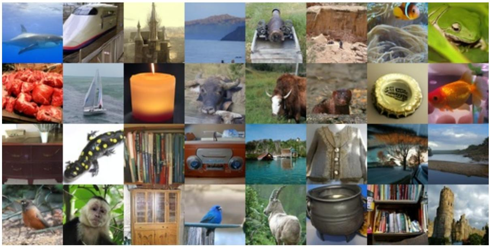

Figureure 2 · : Training curves for the matched target ablationFigure 2: Training curves for the matched target ablation. Checkpoints after initialization are evaluated every 40 epochs; clean-latent variants keep lower FID and higher Inception Score than velocity counterparts.这张图/表用于判断 JLT 的实验收益来自哪里。重点看替换、消融或跨模型设置下趋势是否一致，而不是只看单个最高分。

Figureure 1 · : ImageNet 256 × 256 samples from JLT-B/1 using 50-step Heun sampling.Figure 1: ImageNet 256 × 256 samples from JLT-B/1 using 50-step Heun sampling.这张图来自论文 PDF 的结构化抽取。当前用于辅助理解 JLT 的方法或实验，请结合正文精读段落一起看。